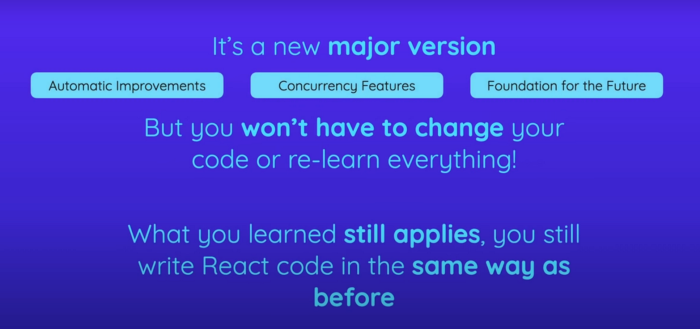
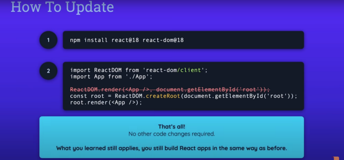
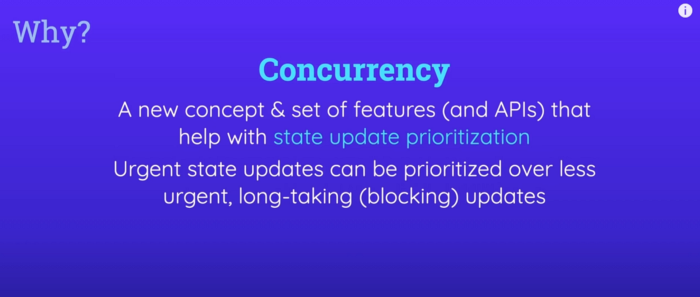
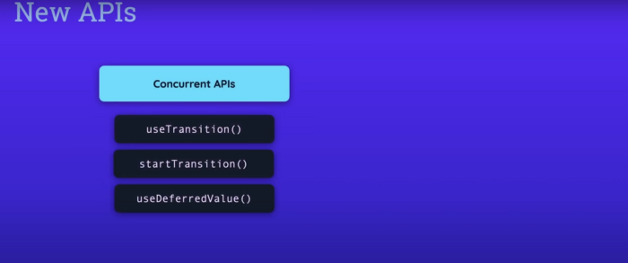
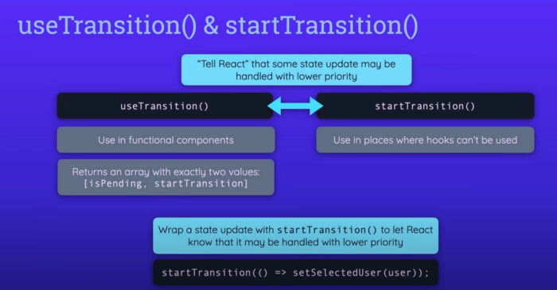
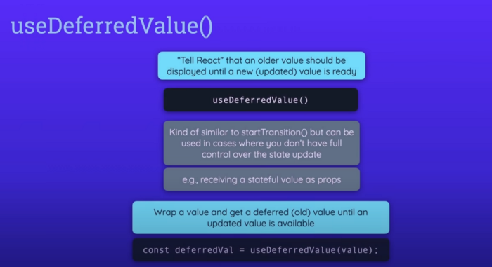
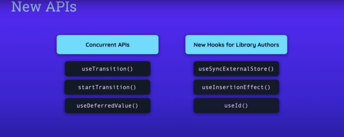
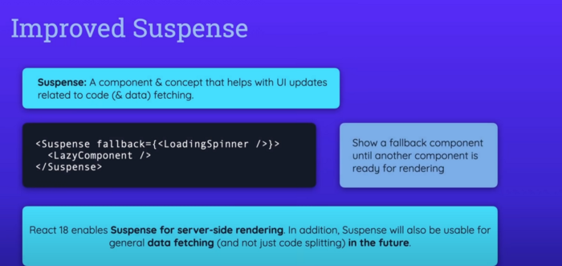

React version 18 was released, and since it is a major new version of React it does, as you would expect, introduce some new, exciting features. Thankfully, though it does not break your existing code, what you learned about react still applies. The code you write still is the same.
How To Upgrade Updating, indeed, is a piece of cake. All you have to do is run npm install and install the latest versions of React and React DOM, and then there’s one single change you have to make to your codebase to take advantage of all the new features unlocked and added by React 18. You have to go to your root entry file, typically index.js and then in that file replace the import of ReactDOM from react-dom with this import, where you import from react-dom/client. So that’s a tiny addition you have to make to the import statement and replace the line where you called ReactDOM.render to render the root component into some element in the index.html file with the line below where you call to create a root on React DOM. Instead and you pass the root element in the index.html file to create root and then on this root object which is returned by createRoot, you call render to render the root component into this root element in index.html.
That’s the only change you have to make your code no other code changes are required, that’s only in one file and only in these two lines of that file. Why You Need To Upgrade Now, Why was this change made? Why was this syntax changed? because by changing to it, you opt in to a new set of features and into a lot of behind the scenes, improvements, and changes that were introduced by React18. The most important new feature introduced by React 18 is a feature called concurrency and that’s actually rather, a concept that is made up of a set of features that were unlocked and added by React 18. Concurrency is all about processing, multiple simultaneous state updates. For example, a list that updates as a user types into an input field. If there is a lot of data to be processed, or the logic for processing the user input is rather complex, the user interface can get laggish and slow, especially on slower devices. In the past prior to React version 18, React always process all state updates in the order in which they were triggered, and the next state update could only be processed, once the previous one was done. With React 18 and the addition of this concurrency concept, you can tell React that a certain state update has a lower priority than another state update, and React is then able to treat the other updates with higher priority.
New APIs Now you tell React about a state update that has a lower priority. By using one of the new APIs introduced with React 18.
you can use useTransition hook or just startTransition function in places where hooks can’t be used, for example, in class-based components. To tell React that a certain state update process is about to start and that it should not wait for this process to finish before processing other state updates.
So the wrap state update will have a lower priority. In other cases, you might have a value that’s generated by some state update, which you maybe don’t directly control, and you can use useDeferredValue to let React, know that an older version of the value should be shown until the new value is ready instead of waiting with the entire component and UI update until the new value is available.
Now, these functions and hooks are obviously very new and therefore we will of course have to see which patterns and best practices will emerge based on them. You should definitely not start wrapping all your or state updating calls or all your values with those functions in hooks. Instead, you should use them in niche cases where very complex calculations are going on where the interface is lagging and you have no other way of improving it or you have no other obvious error that could be causing this behavior than these functions and hooks can be helpful. Now React 18 also introduces a couple of other functions which are primarily intended to be used by library authors. These hooks solve specific problems which may be encountered by specific libraries like CSS, JavaScript libraries and they allow the authors of these libraries to work around any problems they might face and utilized new concurrency features unlocked by React 18.
As an application developer, you will probably never work with these hooks. Behind The Scenes Improvement Now besides these new APIs and hooks, you also get some changes for existing features. For example, state batching state batching already existed in older versions of React as well, and it’s all about grouping multiple state updating calls together so that they are executed as one state update call instead of multiple calls. This ensures that the components to which the state updates belong is not evaluated and executed multiple times unnecessarily, but that at it instead is only executed once. Now the problem is that with React 17 or older this feature already existed, but it only worked inside of synchronous React event handler functions. if you, for example, had a function that was triggered because a timer expires, state updates performed in that function were not batched together. This changed with React 18 and state batching now always works, no matter where you make your state updates. Improved Suspense Another important change affects the suspense component. The suspense component was already added in the older versions of React, and it can be used to be wrapped around lazily loaded components. Lazy loading simply means that you implement code splitting to only load to code for a certain component when it is needed. This can help with performance, since less code has to be downloaded initially. This is often used in combination with routing. Now you could already use the suspense component to show a fallback component. For example, a loading spinner until the code for the lazily loaded component was downloaded. However, prior to React version 18, you could not used as the suspense component if you also use server side rendering. Now, of course many apps might not use that. But if you did, use it, you were not able to use the suspense component because it would cause an error. With React 18 that’s changed and you can now use this component, as you always were able to use it on the client side on the server side as well.
as a side note, we will probably see more exciting changes to the suspense component, in the future. Now that React 18 is out because the React team does plan to also make the suspense component to work with data fetching, not just with code fetching for lazily loaded components. The idea is that your components, if they are fetching data, can tell React that they are and tell React when they are done fetching data and then the suspense component, which is somewhere above the data fetching components in the component tree, is able to show a fallback for the components that are fetching data until the data is there. This means that you won’t have to manage the loading state manually inside of your components any more , and you can decouple logic for doing that from your user interface. Now this feature is not there yet but it’s planned to be added in the future and React 18 also lays the foundation for that. Another really exciting feature that isn’t there yet, but which will probably see in the future. Now that React 18 was released, are server components. These are components that are not just pre-rendered on the server, as you can already do it today with server-side-rendering, but instead, these are components that are meant to only execute on the server and yet work seamlessly together with client-side components. Once this feature is added to React it will effectively turn React into the kind of full-stack framework or library which allows you to make server-side with client-side code so that you are not just limited to building user interfaces but you instead can also certain server-side only logic in your React app. This could be used for performing tasks on the server that should not run on the client for security or performance reasons. This feature is not there yet. You can’t yet use these components. It’s an alpha stage only and will probably change a lot over the next months. But we will probably see it in the future. Bit: Build Better UI Component Libraries Say hey to Bit. It’s the #1 tool for component-driven app development. With Bit, you can create any part of your app as a “component” that’s composable and reusable. You and your team can share a toolbox of components to build more apps faster and consistently together. Create and compose “app building blocks”: UI elements, full features, pages, applications, serverless, or micro-services. With any JS stack. Easily share, and reuse components as a team. Quickly update components across projects. Make hard things simple: Monorepos, design systems & micro-frontends.